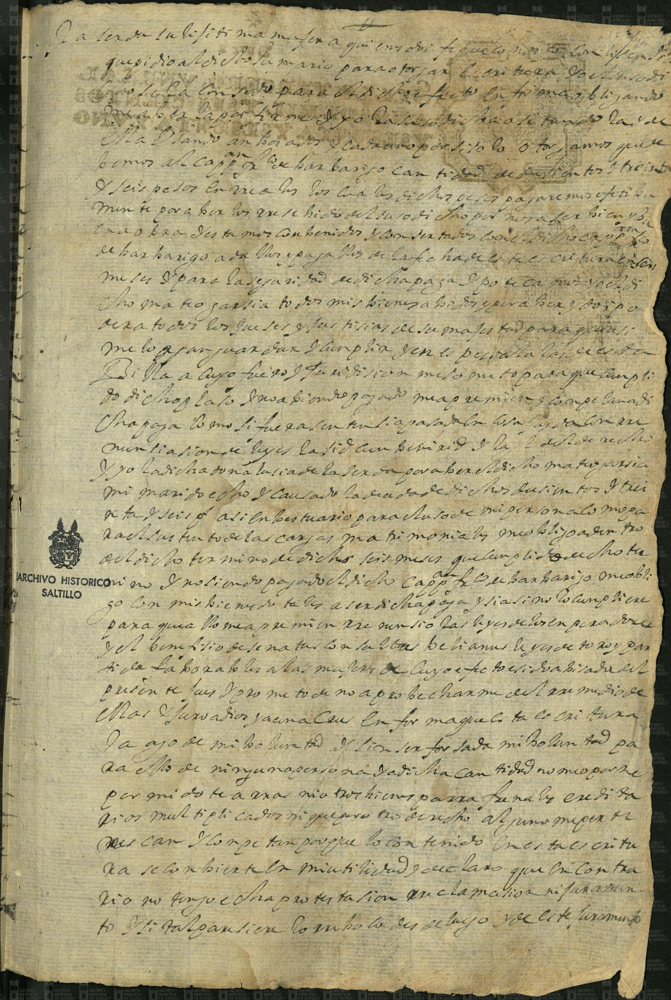

Expediente Histórico: Matrimonio Mateo Garcia y Lucia de la Cerda

Manuscrito Original (Clic para ampliar)
Transcripción Paleográfica
En quince dias del mes de Noviembre de mil ochocientos treinta y seis años. Yo el Pbro. D. Jose Ma. de Cardenas Cura propio y Juez Eclesiastico de esta Parroquia de S. Francisco de la Villa de Patos asistí al matrimonio que contrajeron In Facie Eclesia por palabras de presente de una parte Mateo Garcia, mozo soltero, originario y vecino de esta feligresia, hijo legitimo de Jose de Jesus Garcia y de Asencion Flores; y por la otra parte, Lucia de la Cerda, doncella, originaria y vecina de esta, hija legitima de Calixto de la Cerda y de Maria Santos Saucedo. Habiendose practicado las diligencias necesarias y previas dispensas de amonestaciones, fueron testigos de este acto Jose Martinez y Juan Perez, y para que conste lo firme.